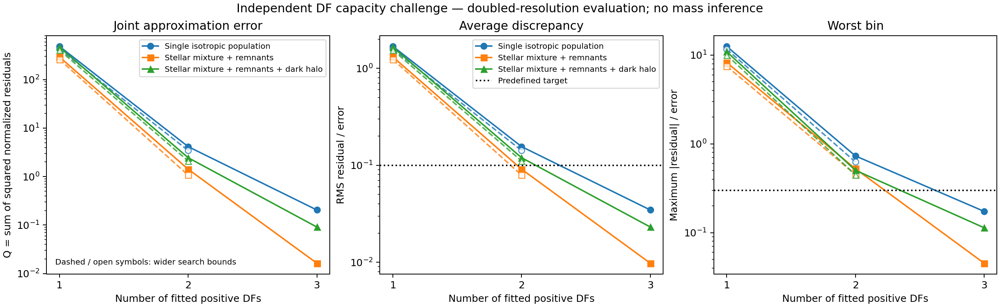
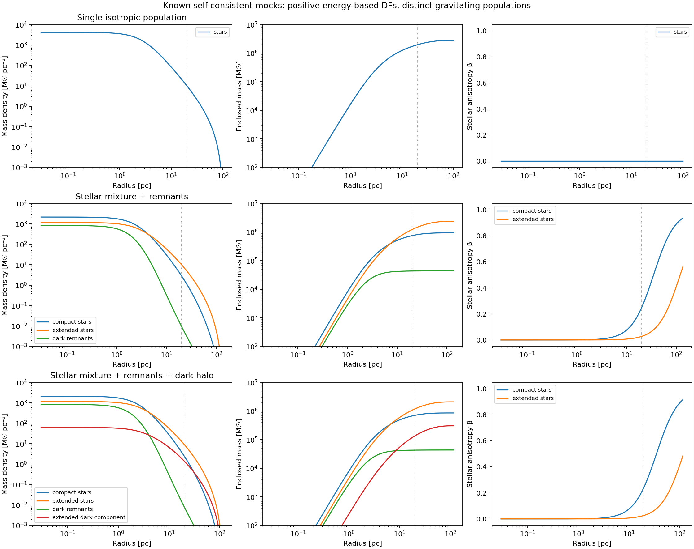
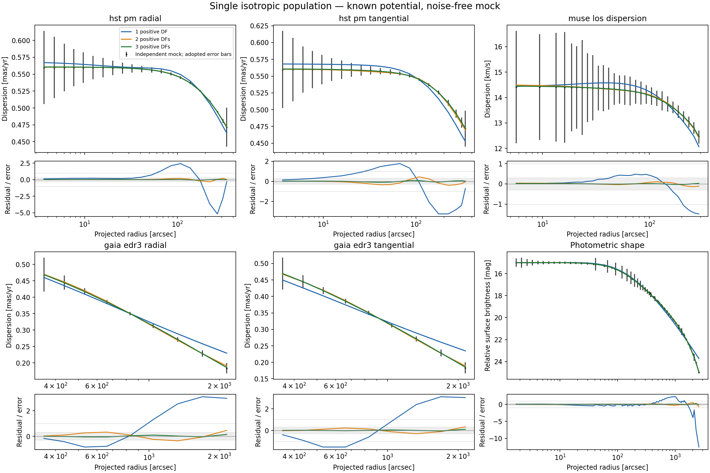
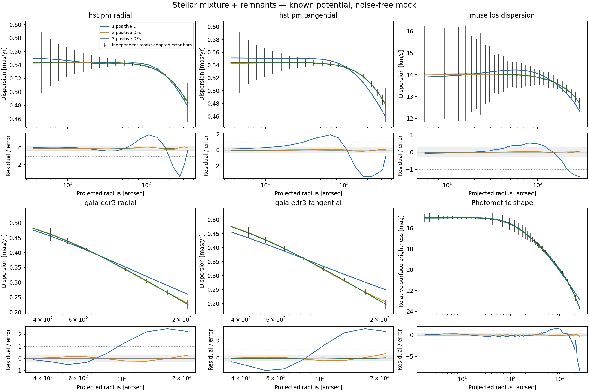
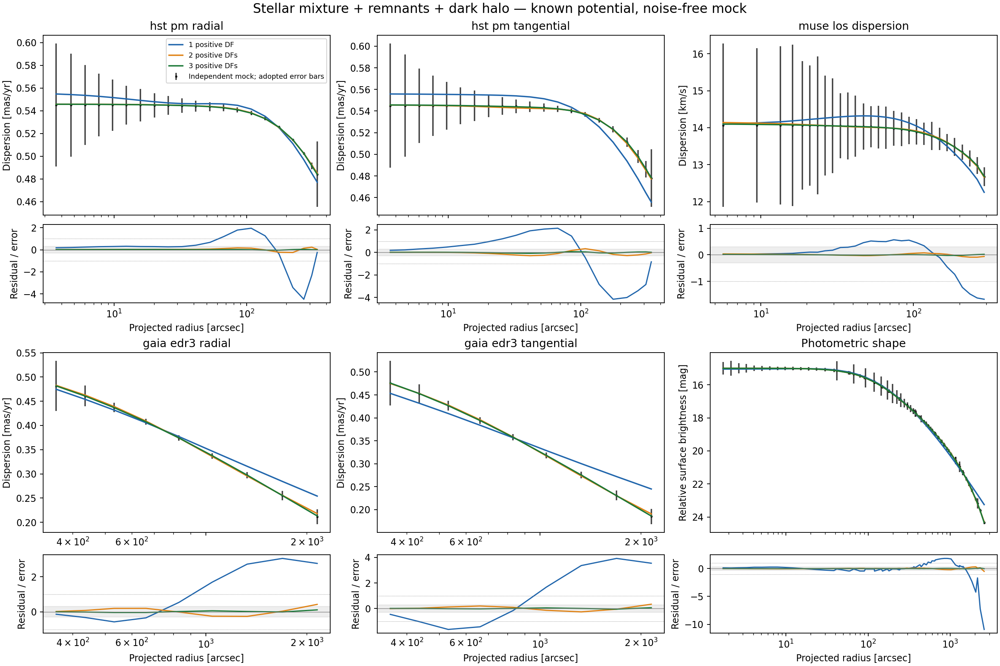

Independent DF flexibility challenge¶
This experiment asks whether the positive action-DF family can reproduce the projected light and velocity moments of an independently constructed equilibrium cluster when its true gravitational potential is supplied. It is the first stage of the proposed mock-recovery programme. Mass recovery, noisy posterior coverage and fits to the real data are separate subsequent stages.
Independent physical truth¶
The truth generator is src/ocen_dm/kinematics/df_mock.py. It solves Poisson's
equation for several positive energy-based DFs, independently of the fitted
AGAMA DoublePowerLaw action family. Each population has
The isotropic limit is anisotropy_radius_pc=None. The zero outside the allowed
energy domain is part of the analytic DF definition; no negative inversion is
clipped. Every gravitating component, including dark remnants and the optional
halo, has a positive DF in the same self-consistent potential. These are
collisionless equilibria; stability and survival in a Galactic tide have not
been tested. There is no central point mass or rotation in this first challenge.
Writing W=Psi/s_i^2, the density and radial pressure follow independent
analytic velocity integrals:
Here p_t is one tangential pressure component. For numerical stability near
the edge, the code evaluates
The ordinary differential equations dPsi/dr=-GM(<r)/r^2 and
dM_i/dr=4 pi r^2 rho_i are integrated to their first Psi=0 boundary. The
external potential is the Kepler potential of the resulting finite mass.
AGAMA receives a spherical multipole representation of this independently
computed total density; its forces and potential are checked against the ODE.
Three cases use central dimensionless potential 7, reference radius 3 pc and velocity scale 15 km/s:
| Case | Gravitation and stellar populations | Total mass | Truncation radius |
|---|---|---|---|
single_isotropic |
One isotropic luminous population | 2.8033 million solar masses | 101.13 pc |
mixed_no_dm |
Compact and extended stars, concentrated dark remnants | 3.3516 million solar masses | 137.29 pc |
mixed_with_dm |
The same kinds of populations plus an extended dark component | 3.2845 million solar masses | 117.49 pc |
The mixture populations have velocity-scale ratios 0.90 and 1.12 and anisotropy
radii 35 and 120 pc. Their light per unit mass is 1 and 0.7 in arbitrary common
units. Remnants have velocity-scale ratio 0.65 and zero light; the halo has ratio
1.5 and zero light. Their normalizations are specified by central density
fractions, not total mass fractions. In the halo case, the resulting masses
are 0.856 and 2.082 million solar masses in stars, 43,340 solar masses in remnants
and 304,041 solar masses in the halo. All cases and component masses are saved
in truth.json. These are controlled test clusters, not inferred models of
Omega Centauri.
This independent mock strategy follows the rationale of Hénault-Brunet et al. (2019), who compared cluster mass-modelling methods against N-body mock observations. The present energy-based generator is an explicit Osipkov–Merritt construction; it is not the LIMEPY implementation or an N-body realization.
Observations and fitting¶
The challenge uses the saved radial nodes, annular averaging, distance and
error scales of the DF pilot: 89 kinematic bins across HST radial/tangential,
MUSE LOS and Gaia radial/tangential profiles, plus 82 photometric points.
The original measured values are replaced by exact projected mock expectations.
No random noise or published streaming subtraction is applied: both the mock
and fitted even DF are nonrotating. Kinematic weighting uses the mean of the
saved lower and upper errors. The photometric scale remains the explicit pilot
choice, 0.1 mag / sqrt(relative weight), with one profiled common zero point.
Consequently the joint sum Q is a diagnostic approximation score, not a
calibrated chi-squared probability, evidence or model-selection statistic.
All five kinematic profiles sample the same luminosity-weighted stellar mixture. Different luminosity and mass weights are present in the physical truth, but differences in population selection between instruments are not introduced in this first stage. At fixed potential the combined light DF is itself positive and stationary. Matching it does not require the fitted basis components to correspond one-to-one to physical populations.
The fitter in src/ocen_dm/kinematics/df_capacity.py uses one, two and three
positive DoublePowerLaw shapes. Each has six free shape coordinates: ln J0,
inner and outer slopes, ln steepness, and inner and outer radial-action
coefficients. Positive mixture weights contribute N-1 log ratios, giving
6, 13 and 20 fitted coordinates. These are fractions of the light density at
1 pc, not fractions of gravitating mass. The overall light normalization is
unconstrained after profiling the photometric zero point.
Actions are cached in the fixed true potential. Velocity integration generates the density and pressure fields; projection and the saved observational binning produce the fitted quantities. Analytic derivatives pass finite-difference checks through the entire calculation. A candidate DF does not replace the known mass density or update the potential in this experiment.
Each fit uses three initial conditions and bounded nonlinear least squares, with at most 600 objective evaluations per start. The first start at the next mixture size splits a component of the previous solution, with a small perturbation to separate the two shapes. Two independent starts check other solutions. Evaluation histories, termination messages, boundary contacts, source copies/checksums, AGAMA binary hashes and complete input snapshots are preserved in fresh result directories.
The original bounds are J0=5–3000 pc km/s, inner slope -3–2.5, outer slope
3.6–25, steepness 0.3–8 and action coefficients 0.15–2.85. Fits contacting
these limits motivate a separate wider-bound control for one and two DFs:
J0=0.5–100000, inner slope -6–2.8, outer slope 3.3–60, steepness 0.15–12
and coefficients 0.01–2.99. Positive fractions use log ratios in [-10,10]
in both versions. Bounds are search limits, not Bayesian priors.
The pass criterion was set before fitting: RMS discrepancy below 0.1 adopted errors and no individual bin above 0.3 errors, evaluated again at doubled numerical resolution. Numerical validation requires a maximum prediction shift below 0.05 errors after resolution doubling, below 0.05 errors after doubling the outer integration radius, below 0.5% difference from native AGAMA adaptive projected moments, mock projection changes below 0.001 errors, and force agreement better than one part in 100,000.
Results¶
All three mock cases meet the predefined accuracy target with three positive DFs. The table uses the independent doubled-resolution evaluation of each saved best fit, with the original search bounds.
| Independent mock | Q, one DF | Q, two DFs | Q, three DFs | Three-DF RMS / error | Three-DF worst bin / error |
|---|---|---|---|---|---|
| Single isotropic population | 485.384 | 4.149 | 0.2045 | 0.0346 | 0.1735 |
| Mixed stars + remnants | 293.796 | 1.419 | 0.0163 | 0.0098 | 0.0452 |
| Mixed stars + remnants + halo | 466.941 | 2.451 | 0.0910 | 0.0231 | 0.1135 |
The wider-bound checks improve the one- and two-DF solutions, but neither passes the same strict target:
| Independent mock | Wide-bound Q, one DF | Wide-bound Q, two DFs | Two-DF RMS / error | Two-DF worst bin / error |
|---|---|---|---|---|
| Single isotropic population | 428.547 | 3.446 | 0.1419 | 0.6260 |
| Mixed stars + remnants | 261.075 | 1.072 | 0.0792 | 0.4513 |
| Mixed stars + remnants + halo | 407.566 | 2.103 | 0.1109 | 0.4475 |
There were 45 optimization starts and 6,605 objective evaluations across the main challenge and boundary controls. Forty-four starts met an optimizer termination criterion. One three-DF start in the no-halo mixture exhausted 600 calls at Q=0.0570; two other starts found better solutions, and the selected fit met a termination criterion. The three-DF solutions demonstrate attainable accuracy even though their shape parameters are not unique and some contact the search bounds. The result does not require proof of a global optimum.
Several one-DF parameters still contact the wider limits. Thus the experiments show poor performance of one DF in both tested search domains, not a proof that every possible member of the unbounded analytic family fails. Two DFs already give sub-error residuals; their failure here refers specifically to the stricter 0.1-RMS/0.3-maximum target, not to a statistical rejection against noisy observations.
All 15 selected models passed the numerical controls. The largest change after doubling resolution was 0.0116 adopted errors, in a wide-bound one-DF fit; the three-DF fits changed by at most 0.0035 errors. Their approximation residuals therefore remain below the predefined target after numerical refinement. The 104 focused tests passed, covering the new challenge and the existing positive-DF, consistency, anisotropy and replay controls.
Interpretation. A three-component positive light DF is sufficiently flexible for these independent, finite-radius mock clusters at the adopted observational precision. The improvement also occurs for a truth containing only one stellar population. The fitted components supply shape flexibility: they are not a count of physical stellar populations or sources of gravity. Much of the single-DF mismatch appears in the outer profile curvature and the tightly measured HST bins; the plots show both the profiles and normalized residuals.
The supplied true potential already contains the correct stellar, remnant and halo gravity. These tests therefore do not measure any component mass and do not establish unbiased DM recovery. They also do not validate the production model's assumption that stellar mass follows the same weighted DF as light. The mass-recovery stage now separates stellar mass/light weights and fits the mass distribution, with noiseless controls preceding noisy realizations. Instrument-specific population selection, rotation, flattening and nonequilibrium effects remain separate tests; passing this first challenge is evidence of capacity within its stated scope.
Figures and saved products¶
Figure 1 compares the approximation errors for all cases. Solid curves use the original bounds and open symbols/dashed lines the wider controls. Dotted lines mark the predefined RMS and worst-bin targets. Values are from the doubled-resolution evaluation.

Figure 2 shows the true component densities, enclosed masses and stellar anisotropies; the vertical dotted line marks 20 pc.

Figures 3–5 compare the original-bound best fits with each independent mock at the actual observational bins. The grey residual band is ±0.3 adopted errors. Error bars show the precision used for weighting; the mock points themselves have no added random noise. These curves use the optimization grid, whose separate numerical validation is reported above.



Main runs are in results/df/capacity_20260922_{single_isotropic,mixed_no_dm,mixed_with_dm}/.
Wider-bound controls are in the corresponding capacity_wide_20260922_*
directories. Every run has a completed manifest, per-start records, full
evaluation histories, a physical truth specification and preserved input/code
snapshots. The combined plotted arrays and source checksums are in
results/plot_data/df_capacity_20260922.json.
The verification record is in
results/diagnostics/df_capacity/verification.json.
Reproduction¶
Use the project Python environment with AGAMA installed and one numerical thread per process. For example:
OMP_NUM_THREADS=1 OPENBLAS_NUM_THREADS=1 VECLIB_MAXIMUM_THREADS=1 \
PYTHONDONTWRITEBYTECODE=1 MPLCONFIGDIR=/tmp/ocen-df-mpl \
python bin/run_df_capacity.py --case mixed_with_dm \
--out results/df/new_capacity_mixed_with_dm --starts 3 --max-evaluations 600
Existing run directories are refused. A boundary check can use
--wide-bounds --components 1 2 --initial-run <original-run> with a fresh
output directory. bin/plot_df_capacity.py --runs <completed-run-directories> --controls <wide-bound-run-directories>
generates PNGs under plots/ and plotted arrays/checksums under
results/plot_data/. The numerical products remain in results/df/.
The test suite includes analytic energy-DF integrals checked against direct velocity integration; radial mass integrals and force checks; native AGAMA DF and projection comparisons; derivatives for all mixture sizes; exact saved binning/unit conversion; invariance to a common light normalization; and an optimizer recovery control generated within the fitted family. The latter is only an implementation check, distinct from the independent physical challenge.